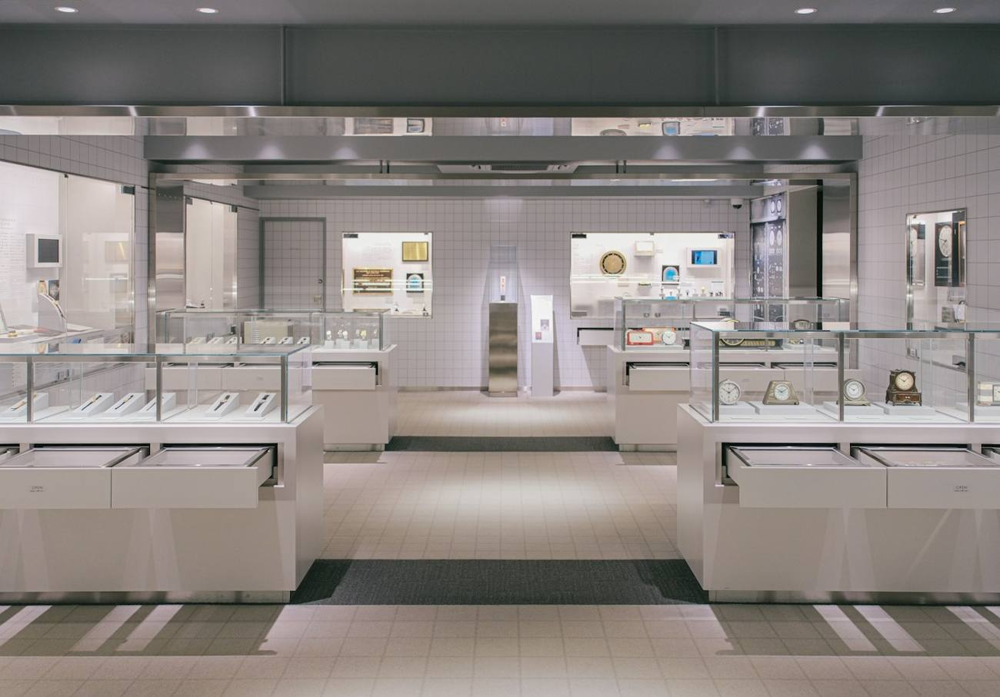

Sans aucun moulage
Tous nos bijoux sont fabriqués entièrement à la main, sur place, sans aucun moulage. Une façon de travailler, côte de la Fabrique, depuis 1963.
Michel ZimmermannBijoutier
Pierre ZimmermannBijoutier
Dans le Vieux-Québec, Michel et Pierre Zimmermann fabriquent sur place, entièrement à la main, des bijoux de très haute qualité.

Tous nos bijoux sont fabriqués entièrement à la main, sur place, sans aucun moulage. Une façon de travailler, côte de la Fabrique, depuis 1963.
Enroulez un fil ou une bande de papier autour de votre doigt, marquez le point de rencontre et mesurez la longueur en millimètres.
Une estimation pour vous guider : à la bijouterie, on prend votre mesure exacte.
Parler d'une bague46 Côte de la Fabrique
Québec, QC G1R 3V7
418 692-2672 · Sans frais : 1 888 809-2672
bijouterie@zimmermann-quebec.com
4,8 ★ sur Google · 38 avis
Ouvert toute l'année, sans interruption le midi, sauf les 25 et 26 décembre et les 1er et 2 janvier.